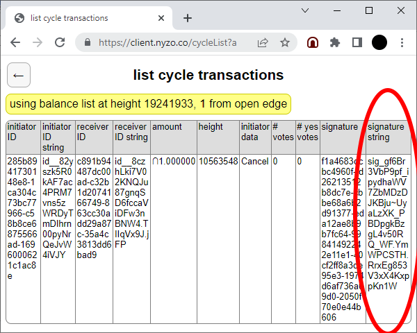

The CycleTransactionSignScript is used to quickly sign a cycle transaction for multiple verifiers.
This script relies on a standard sentinel installation. If you do not have a sentinel installation already available, configure one by following these instructions.
The script requires the initiator signature of a cycle transaction. The easiest way to obtain this signature is from the cycle transactions page on the nyzo.co site.
To run the script, open a command line and navigate to the nyzoVerifier directory. Run the following command, replacing the signature in the command below with the signature of the transaction you want to sign, and replacing the 1 value of the second argument with 0 if you want to vote against the transaction.
sudo java -jar build/libs/nyzoVerifier-1.0.jar co.nyzo.verifier.scripts.CycleTransactionSignScript sig_g3gMk7KyJM_Kf~5oV~oS1TfULhjEg9JIdXqFfdxsWA-1AyZP3EXDgs39V3eKxSwxLN3ecgUPiPaea5Gd_QGGrgvjtBth 1
The script will gather some information from the managed verifiers: the frozen edge, the transaction, a list of in-cycle nodes, and the order of the current cycle. Then, it will sign the transaction for every managed verifier in the list and send every signature to the 5 verifiers in the cycle most likely to verify it.
For the version-1 blockchain, this script had to send signatures to every verifier in the cycle. In this version, only 5 messages will typically need to be sent per managed verifier. At a cycle length of 2000, this reduces overall traffic by 99.75%. So, if you have 50 managed verifiers, the script will typically send 250 messages total.